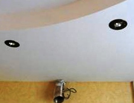

Качественный электромонтаж в Санкт-Петербурге и ленобласти, стаж 12 лет. Частный электрик, недорого и качественно.
Телефон - 8 904 642 08 57 Николай.

Электрик на Планерной, частный мастер, электромонтаж на планерной.
Здравствуйте! На сегодняшний день услуги электромонтажа являются одними из наиболее востребованных, хоть данный рынок уже является довольно насыщенным. Но даже с учетом кризисной ситуации, особенно в СПБ, где строительство постоянно идет огромными темпами и количество объектов довольно большое, услуги электрика всегда востребованы. И я являюсь одним из тех, кто предоставляет данные услуги в нашем городе, а именно - делаю электромонтаж на планерной.
Для начала, следует вкратце рассказать, какие услуги я предоставляю. Поскольку я частный электрик в СПБ и могу работать как с организациями, так и частными лицами, список моих услуг можно коротко представить ниже.
Сколько стоит услуги электрика на планерной?
Вариант работы. |
Цена в руб. |
Электромонтаж 1 комнатной квартиры под ключ. |
От 30 000. |
2 – комнатной. |
40 000 |
3 – комнатной. |
50 000 |
4 – комнатной. |
60 000 |
Электромонтаж кухни под ключ на Планерной. |
От 10 000 |
Электромонтаж комнаты под ключ. |
От 11000 |
Заменить розетку, выключатель. |
200 руб. штука. |
1. Прокладка проводов и кабельных линий.
2. Ремонт и монтаж распределительных линий, а также трансформаторных подстанций.
3. Реконструкция, сборка щитов.
4. Монтаж электросиловых установок различных направлений.
5. Замеры или проверка работающих долгое время или недавно налаженных сетей.
Суть моей работы заключается в следующем. В первую очередь при заказе я начинаю разработку самого проекта, где указан перечень работы и его расценки. Далее я перехожу уже непосредственно к самому процессу монтажа сетей, проще говоря, к работам электрика из Планерной.
Ниже я привел суть моего направления, где более точно расскажу о предоставлении своих услуг.
- Чтобы было понятно, в каких случаях я могу вам помощь, могу привести небольшой список того, что представляет собой электромонтаж на планерной:
Делаю прокладку кабельных линий или проводов в стальных и пластмассовых трубах, в строительных сооружениях, различных конструкциях, а также жилых и производственных помещениях. - Провожу монтаж силовых агрегатов любого направления. Это касается монтирования и подключения электродвигателей, конденсаторных установок, коммутационных аппаратов, а также установок, которые склонны в пожарам или взрывам.
- Провожу монтирование, ремонтные работы или реконструкцию распределительных устройств и трансформаторных подстанций. Это включает в себя процесс установки, сборки и настройки выключателей, ошиновки открытых/закрытых распредустройств, монтаж статических преобразователей и прочие услуги, который можно найти среди представителей монтажа на улице Планерная.
В случае с частными лицами мои услуги сводятся к более простому списку:
- Монтирование осветительных электрических сетей, налаживание питания для компьютерных систем, а также систем безопасности и связи.
- Прокладывание внешних сетей для электроснабжения при напряжении до 1000 Вольт.
- Прокладывание кабеля в земле.
- Прокладка кабелей в практически любых помещениях (жилое или промышленное).
- Монтирую уличное освещение и устанавливаю опоры.
- Занимаюсь архитектурной и декоративной подсветкой.
- Замеряю параметры электросетей. Как в качестве индивидуальной услуги, так и при необходимости.
- Провожу электромонтаж под ключ в квартире, загородном доме, коттедже, на даче, в бане или на любом другом объекте.
- Монтирую электропроводку и щитки, подключаю выключатели, люстры и другие элементы.
После того, как я узнаю, какие услуги от меня требуются, и согласую все технические моменты, начинается этап подготовительных работ. Они будут как за пределами зоны и на самом объекте, где требуется электромонтаж на планерной. Это включает в себя нижеприведенный список работ:
- Подготовка трасс для прокладки проводов и проводников для заземления.
- Установка закладных элементов и других деталей, которые потребуются для последующего крепления оборудования.
Следующий этап уже будет непосредственно относится к подключениям, наладке и прочему, что от меня требуется. При этом следует знать, что именно первая фаза работы является основной, поскольку, чем тщательней она будет пройдена, тем лучше и быстрее можно получить максимально хороший результат.
По завершении своей работы, которая очень тщательно проверяется, можно переходить к оплате. В случае возникновения вопросов я провожу консультации по эксплуатации и отвечу на любые вопросы.
Чем мои услуги отличаются от прочих мастеров.
1. Оперативность. После принятия заявки я в максимально короткие сроки смогу прибыть к клиенту. Это занимает немного времени, поскольку я работаю именно в СПБ, где находится электромонтаж на планерной. При вызове мы согласовываем время моего посещения, после чего я проведу осмотр работы и сообщу вам о сроках выполнения задачи. Они, как правило, короткие, поэтому результат вы увидите буквально за пару дней.
2. Низкая цена. Поскольку я являюсь индивидуальным мастером, мои расценки значительно ниже, чем у конкурирующих фирм или команд специалистов. Так, вы не платите мне за работу оператора по приему заказов и различные сборы, которые компании включают в стоимость своей услуги. При этом следует помнить, что при работе со мной вам не нужно оплачивать диагностику, а оплату я делаю исключительно по факту выполнения заказанной работы. Расценки с каждым клиентом оговариваются индивидуально и будьте уверенны - они в любом случае окажутся у меня ниже, нежели в других фирмах. Так как услуги электриков на планерной встречаются довольно часто, то с уверенностью могу сказать — небольшая цена всегда является плюсом.
3. Отношение к клиенту. Поскольку для любого продающего свои услуги специалиста самое важное - клиент, я не являюсь исключением. Взаимопонимание будет достигнуто после первой встречи, а все что нужно выяснить, будет проведено как можно быстрее и качественнее. И как я уже говорил, в случае необходимости я смогу вас проконсультировать по любому интересующемуся вопросу. Вы сможете, обратится ко мне за советом в любое время, и будете обязательно проинформированы. В случае если вам потребуется поиск электро материалов по приемлемым ценах, я обязательно подскажу все, что нужно. Поэтому, тому, кто монтирует на планерной, доверять стоит.
4. Уверенность в исполнителе. Так как я являюсь дипломированным специалистом с большим опытом работы в данной сфере, вы сможете поручить мне практически любые работы и в успешном результате в моем случае можно не сомневаться. Свой опыт я нарабатывал не один год и смогу понять с одного взгляда, что и как лучше сделать. Впрочем, среди предоставляющих услуги электромонтаж на планерной, у меня нет ни одного заказчика, который остался недовольным.
Стоит отметить, что никто не отрицает о забитом рынке подобных услуг на сегодняшний день. И также никто не говорит, что подобных частных мастеров сейчас очень много. Но при этом нужно помнить, что имея дело с компанией, она в любом случае поставит более высокие цены при действительно хорошем сервисе и качественном исполнении работы. В свою очередь, другие специалисты могут просто оказать некачественную услугу при невысокой стоимости или поставить более высокие расценки за услугу, нежели она того стоит.
В моем случае же я больше работаю на клиента, нежели за расценки и благодаря своему опыту могу порекомендовать себя при разных услугах. Впрочем, решать вам, и если вас заинтересовали мои услуги, то повторюсь, я занимаюсь электромонтажом на станции планерная.
 Поменять проводку в квартире.
Поменять проводку в квартире. Сколько будут стоить материалы.
Электрика в загородном доме стоимость работ.

Замена электропроводки в панельном доме.
Расценки на электропроводку квартир.
Замена проводки в хрущевке.
Электромонтаж в частном доме.
Электрика в загородном доме.
Сколько стоит замена электропроводки в двухкомнатной квартире?.
Электрик в новостройку однокомнатная квартира недорого.

Сколько стоит поменять электропроводку в 3-х комнатной квартире.